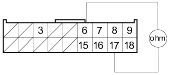
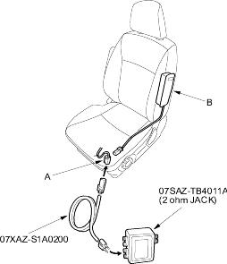

- Check resistance between the No. 6 and No. 17 terminals of the U2o connector. There should be 2.0 - 3.0 ohm.
U2o CONNECTOR

Wire side of female terminals
Is the resistance as specified?
YES - Faulty SRS unit or poor contact at the U2o connector and the SRS unit; check the connection at the U2o connector and SRS unit. If the connector is OK, replace the SRS unit. 
NO - Open or increased resistance in the floor wire harness; replace the floor wire harness.
- Erase the DTC memory (see page 23-38).
- Turn the ignition switch ON (II), and check that the SRS indicator light comes on for about 6 seconds and then goes off.
Does the SRS indicator light stay on?
YES - Go to step 3.
NO - Intermittent failure, system is OK at this time. Go to Troubleshooting Intermittent Failures (see page 23-38).
- Turn the ignition switch OFF. Disconnect the battery negative cable and wait for 3 minutes.
- Disconnect the SLi connector (A) from the left side airbag (B).

- Connect the special tool (2 ohm) to the SLi connector.
- Reconnect the battery negative cable.
- Erase the DTC memory.